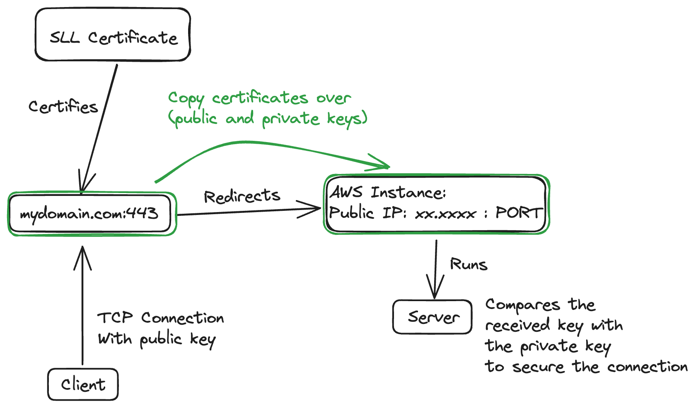

Duck Hub
A Server based multiplayer duck game made in Godot
Play on Itch.ioServer Multiplayer Solutions
First of all, I wanted the game to be as accessible as possible, so my main requirements for the game were:
This is my first working on a real time server based multiplayer game, and I decided to do so on a new engine as an added learning experience.
Multiplayer synchronizer
First approach I tried was using Godot's built in Multiplayer Synchronizer, which would handle a lot of the player's movement and spawning synchronization, but the solution only worked on peer to peer connections.
ENet Multiplayer Peer
Then I tried using ENetMultiplayerPeer as peer of Godot's multiplayer's interface. This solution uses ENet, which is a UDP connection library.
UPD connections are perfect to handle movement packets since it's not necessary to receive all of them reliably and if packets are missing, I can always interpolate the existing data to fill in the missing data. Everything worked well on regular builds, but when I tried to build for web, my client couldn't connect to the server anymore.
Mixed Content in Browsers
The reason why my clients couldn't connect to the my servers with ENetMultiplayerPeer is because the server is hosted on an Unsecured HTTP connection. Whenever a website that is hosted in a secured HHTPS connection, tries to load media from an unsecured one, that is called Mixed Content and modern browsers will try to block those for security reasons.
This was exactly what was happening when I hosted my game on Itch.io, that is loaded over a secured connection, but tries to connect to my own unsecured server hosted on AWS.
SSL Certificates
The user could manually permit the data by allowing mixed content on their browsers, but that would go against my accessibility requirement. What was left to do then was to secure the Server with an SSL Certificate.
I used Letsencrypt to certify my self-signed certification and brough it over my client and server code. I then changed my connection into WebSocketPeer instead of ENetMultiplayerPeer since UDP wouldn't be able to encrypt and decrypt packets by nature being an unreliable connection.
Architecture
Dedicated Server
Server Synchronization
Clients and Server communicate through RPCs and standard interpolations is implemented to smoothen out client's movements.
Each time a player performs an action, an RPC is sent to the server that replicates the world state and sends the information of the current world state to every connected client, so that everyone will be notified of each other's changes.
Client Interpolation
If the server just sends to the client the positions of each agent in the world every server tick, in the client the movement of every other agent would look really jittery, so the movement of those characters need to be interpolated between the current position and the desired position.
Issue is that it's impossible to know what is the desired position of other agents, since that's data that comes from the Future. Therefore, in real time games, synchronization is often done by rendering the world state a few milliseconds in the past, so each client can store in a buffer the world states of the next few frames to properly interpolate the movements of every other agent.
Clock Synchronization
This is only possible when all clocks across server and clients agree on a shared and unique time clock used to determine what is in the past or in the future, so the clients cannot use their local machine's time.
This sounds trivial but some aspects to take in consideration are: